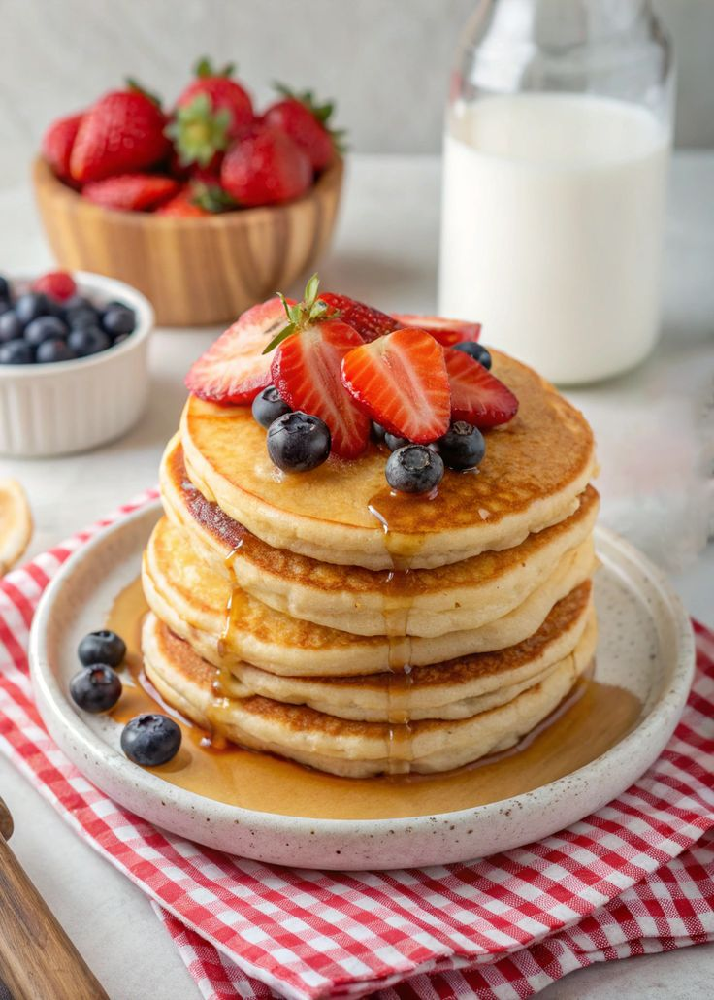
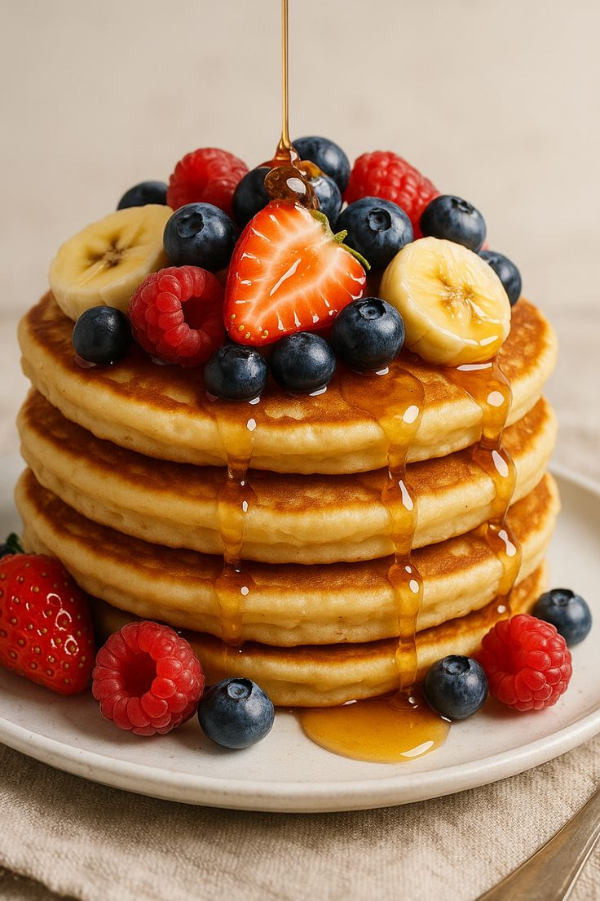
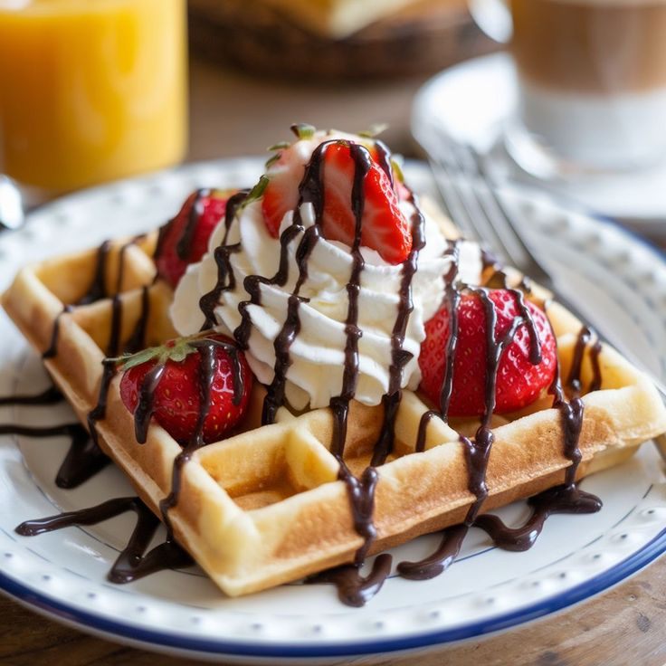
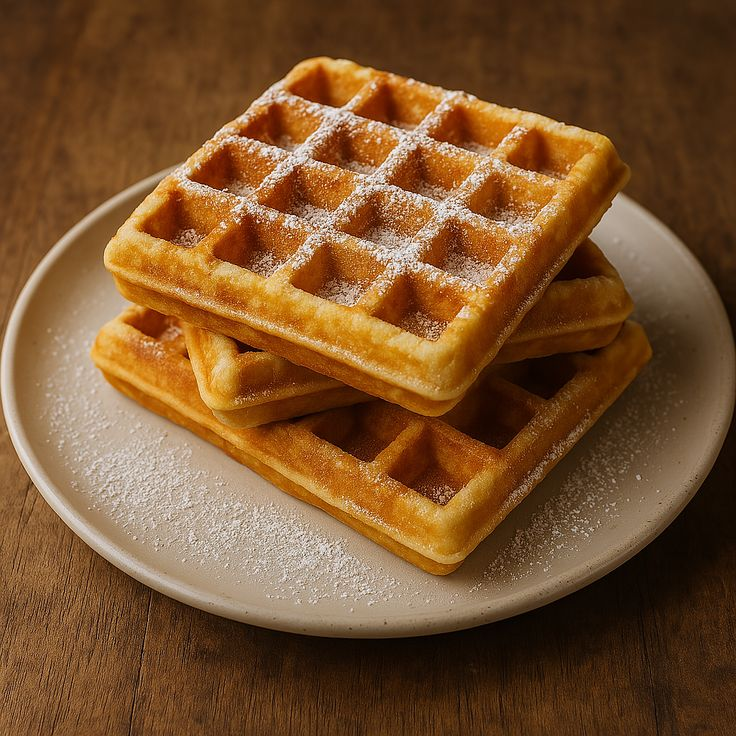
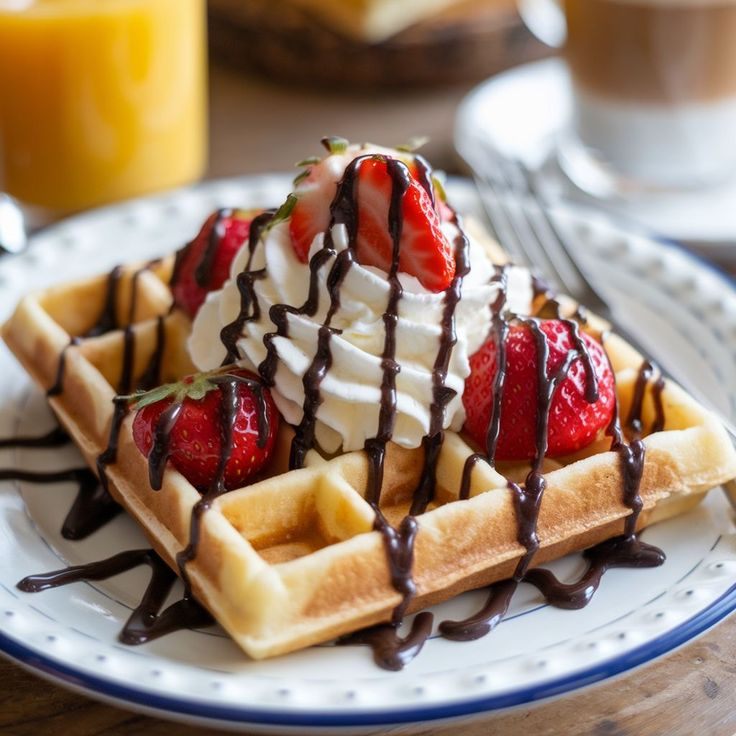
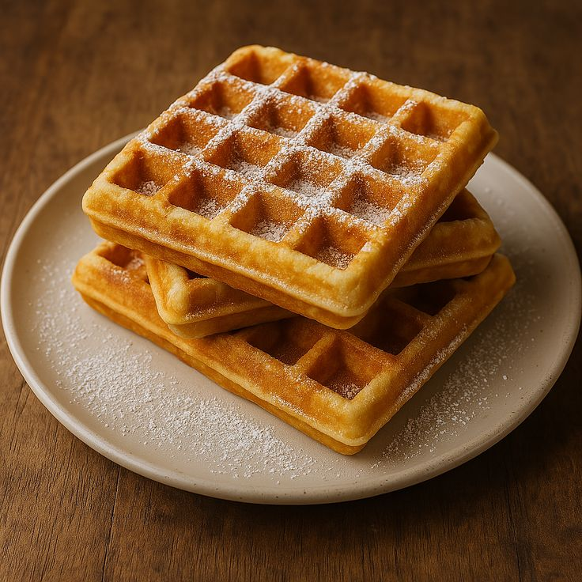
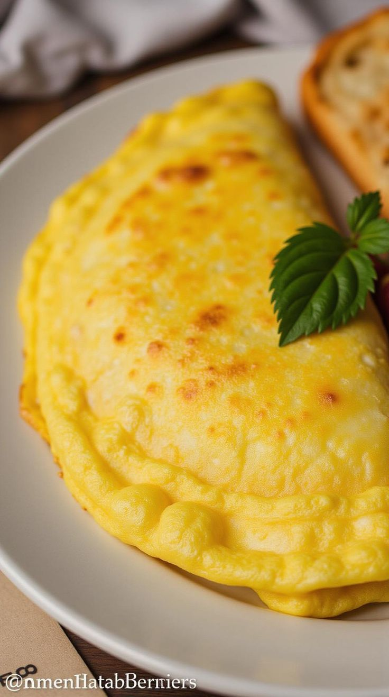
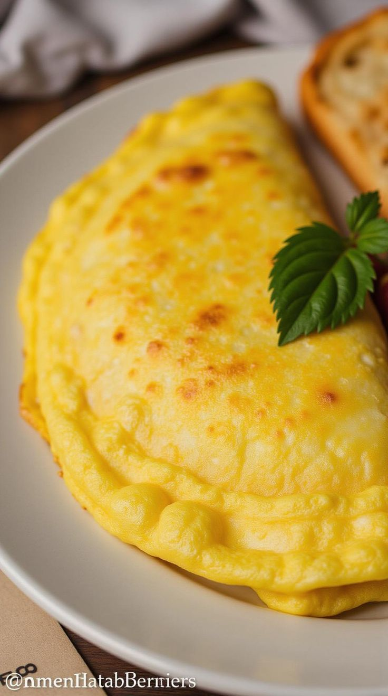

Breakfast
Breakfast is the perfect way to start your day with energy and flavor. In this section, you’ll find some of the most loved morning classics—crispy waffles, fluffy pancakes, and perfectly cooked eggs. Each recipe is simple to make, filling, and guaranteed to brighten your morning. Whether you prefer something sweet, savory, or a mix of both, these dishes will keep you satisfied and ready to take on the day



 



 
